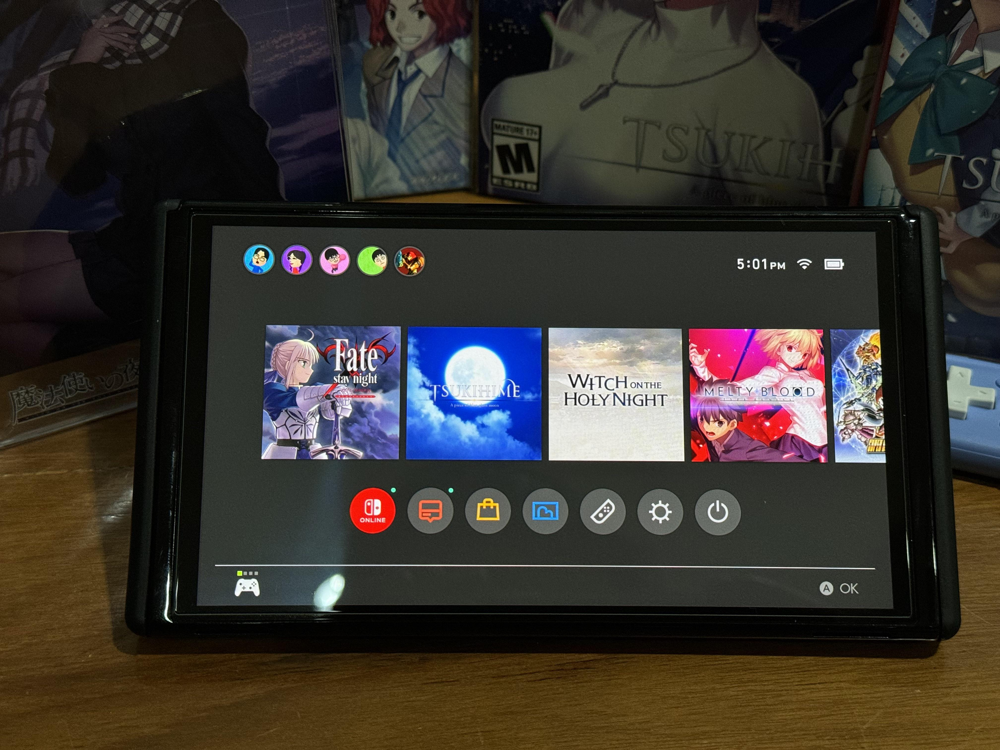

Сайт-проект об индустрии визуальных новелл
Поскольку визуальные новеллы технически не требуют мощных видеокарт, они доступны практически на любом гаджете, и это огромный плюс для читателей.
Скорее, это самый хороший формат. Новеллу можно читать в дороге, в кровати или на перерыве, прямо как обычную электронную книгу. Это очень удобно для коротких игровых сессий.
На ПК выходят самые масштабные и сложные проекты (например, через платформу Steam). Большой монитор позволяет в деталях рассмотреть красивые фоны и сложные арты художников.
Устройства вроде Nintendo Switch или Steam Deck очень популярны среди фанатов жанра, потому что совмещают большой качественный экран, физические кнопки управления и мобильность.
